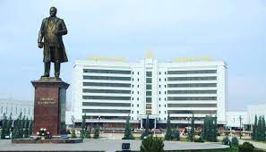
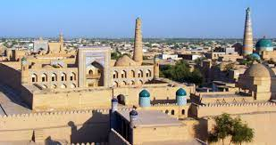

«Uzbekistan Airways» AJ Toshkent – Andijon – Toshkent yo'nalishi bo'yicha muntazam aviaqatnovlarni amalga oshirayotganligini eslatadi. Reyslar haftasiga ikki marta - seshanba va juma kunlari amalga oshiriladi. 08ФЕВРАЛ
2023 12:16:00
Viloyat adliya boshqarmasida ichki ishlar boshqarmasi, tegishli boshqarma va idoralar masʼullari ishtirokida Vazirlar Mahkamasining “2022-2023-yillarda ja...07ФЕВРАЛ
2023 16:47:00
Tuman xalq taʼlimi boʻlimiga yuqoridagi talablarga rioya qilinishini taʼminlash, nogironligi bor xodimlarga Soliq Kodeksidagi imtiyozlarni qoʻllash yuzasi...06ФЕВРАЛ
2023 10:35:00
Marhamat tuman adliya boʻlimi tomonidan Vazirlar Mahkamasining 2020-yil 25-martdagi Qarori bilan tasdiqlangan “Uy-joy sotib olish yoki yakka tartibd...04ФЕВРАЛ
2023 11:53:00
Joriy yilning 1-fevralidan advokatlik tuzilmalari tomonidan advokatlarga muayyan ishni olib borish uchun beriladigan anʼanaviy shakldagi order maqomiga te...
Toshkent – Andijon yo'nalishi bo'yicha aviachipta 125 804 so'mdan, Toshkent – Andijon – Toshkent yo'nalishidagi aviachiptalar esa 213 687 so'mdan boshlanadi.Narxlar 12.07.2021 holatiga ko‘ra amal qiladi.
Buxoro — Oʻzbekiston Respublikasining qadimiy shaharlaridan biri, Buxoro viloyatining maʼmuriy, iqtisodiy va madaniy markazi. O'zbekistonning ilk poytaxti. Buyuk ipаk yoʻlida yirik tijorat markazlaridan boʻlgan. Oʻzbekistonning janubiy-gʻarbida, Zarafshon daryosi quyi oqimida joylashgan. Toshkentdan 616 km. Buxoro 2 ta shahar rayoni (Fayzulla Xoʻjayev va Toʻqimachilik)ga boʻlingan. Aholisi 290000 (2019). Aholisining katta qismini o'zbeklar tashkil etadi. Oliy ta‘lim muassasalari: "Buxoro davlat universiteti", " Buxoro muhandislik-texnologiya instituti".Buxoro shahri qadim zamonlarda qanday nomlangani — nomaʼlum. Milodiy V asrga oid xitoy manbalarida Buxoro shahri Nyumi tarzida tilga olinib oʻtilgan. Binobarin, shaharda shu nomdagi mulk hukmdorining qarorgohi ham boʻlgan. Tan imperiyasining VII asrga oid solnomalarida Buxoro shahri An (Ango), Ansi, Buxo (Buxe, Fuxo) shakllarida qayd etib oʻtilgan. Keyinchalik shahar har xil nomlana boshladi. Arab qadimiy manbalarda u Bumiskat, Madinat us-sufriya (Mis shahar), Numijkat (soʻgʻdcha numij yoki namich degani mashhur degan maʼnoni anglatgan) tarzida keltirilgan. Qadimiy zamonlarda yashagan mahalliy mualliflarning fikricha, shaharning nomi Buxor, yaʼni "Sanamlar turgan ibodatxona" maʼnosini anglatuvchi bir soʻzdan kelib chiqqan.
Ayrim tadqiqotchilarning faraz qilishlaricha, Buxoro nomi mintaqaning eng asosiy buddaviylik ibodatxonasi vixara yoki ana shu vixaraning sug'diy transkripsiyasi boʻlmish buxoro (ibodatxona) soʻzidan kelib chiqqan. Ammo buddaviylik va moniylik diniy taʼlimotlariga oid osori atiqalar shahar hududida ham, umuman, Buxoro vohasida ham topilgan emas.
Buxoro (Buxara) toponimi ilk bor Soʻgʻd yozuvlari bilan Buxoroda zarb qilingan mis tangalarida tilga olingan (milodiy IV-V asrlar).[2]
Skobelev nomiga qoʻyilgan) — Fargʻona viloyatining maʼmuriy, iktisodiy va madaniy markazi, respublikaning yirik shaharlaridan biri. Maydoni 0,09 ming km².
Aholisi (2020): 291 100
Avvalgi nomlari: Skobelev (1910—1924)
Markazi balandligi: 580 m
Iqlim turi: moʻtadil, subtropikFargʻona soʻzining kelib chiqishi toʻgʻrisida turli fikrlar mavjud. Olimlar „Fargʻona“ soʻzining bundan 13 asr ilgari sugʻd yozuvlarida „Pargʻana“, „Pragʻana“ shakllarida yozilganligini hamda hind-sanskrit tilida „kichik viloyat“; fors tillarida „togʻ oraligʻidagi vodiy“, „atrofi berk soylik“ degan maʼnolarga ega boʻlganligini taʼkidlaydilar. Fargʻona oʻzining goʻzal landshaftlari bilan mashhur boʻlgan olis shahar. „Chimyon“ kurorti Olay tog 'etaklaridagi shifobaxsh mineral buloqlarning muvozanati bilan mashhur boʻlgan Chimen qishlogʻiga asoslangan. Eng katta kurort Markaziy Osiyoda joylashgan.[sayt ishlamaydi][sayt ishlamaydi]
1876-yil Rossiya imperiyasi Qoʻqon xonligini yoʻqotib uning hududida Fargʻona viloyatini tuzgach, maʼmuriy markaz qurish uchun Margʻilondan 10 km janubida joylashgan Yormozor va sobiq Sim, Chiringan qishloqlari oʻrnini tanladi. Shahar qurilishi loyiha boʻyicha 1877-yil iyunda boshlandi. Qurilish harajatlari, asosan, mehnatkashlar zimmasiga yuklandi (soliq solindi). Bu shaharni katta maydonni qurshab olgan qalʼa ichida qurish koʻzda tutildi. Qalʼadan shim.gʻarb va gʻarbga tomon radius shaklida uchta uzun koʻcha qurildi. Ulardan biri eski Margʻilon tomonga yoʻnaldi. Bu koʻchalar parallel tor koʻchalar bilan tutashtirildi. General-gubernator shaharni Yangi Margʻilon deb atashni buyurdi. Shaharning qurilishi 1904-yilda yakunlandi. Yangi Margʻilon, asosan, Margʻilonsoyning chap sohilida joylashdi. Oʻng sohili bozor uchun moʻljallandi. Shaharning jan. qismida kazarmalar qurildi, gʻarbiy qismida harbiy boshqarma joylashtirildi. 1880-yilda bu boshqarma yozgi harbiy lagerga oʻzgartirildi.

Baxmal va G‘allaorol tumanlarida “Temir Darvoza” deb nomlangan ajoyib yer osti yo‘llarini ko‘rishingiz mumkin. Jizzax viloyatidagi Qizilqum cho‘lining janubi-sharqiy qism qirg‘oqlarida o‘tovlar manzilgohi joylashgan Aydarko‘l ko‘li ko‘rkamligi bilan sayohatchilarni o‘ziga rom qiladi. Erta bahorda esa bu yerda pushti flamingolarning to‘dasini ko‘rish mumkin.Hudud haqida
Jizzax vohasi uzoq tarixga ega bo‘lib, mintaqa tabiati sizni bir lahzada o‘ziga tortadi.
Baxmal va G‘allaorol tumanlarida “Temir Darvoza” deb nomlangan ajoyib yer osti yo‘llarini ko‘rishingiz mumkin. Jizzax viloyatidagi Qizilqum cho‘lining janubi-sharqiy qism qirg‘oqlarida o‘tovlar manzilgohi joylashgan Aydarko‘l ko‘li ko‘rkamligi bilan sayohatchilarni o‘ziga rom qiladi. Erta bahorda esa bu yerda pushti flamingolarning to‘dasini ko‘rish mumkin.
Mintaqa O‘rta Osiyoning vohasi deb nomlanib, ko‘plab shifobaxsh buloqlar, milliy bog‘lar, qo‘riqxonalar, ko‘plab mevali va yong‘oq daraxtlari o‘sadigan chiroyli bog‘larga ega hududdir.
Davolanish va sog‘liqni tiklash hamda kuchga to‘lish uchun aynan shu yerga sayyohlar kelishadi. Ajoyib tog‘ havosi, toza mineral suv, sog‘lom meva va sabzavotlar moʻjiza yaratadi.
Bu yerda sog‘liqni tiklashni mintaqadagi bir nechta diniy obidalarni ziyorat qilish bilan birga olib borish mumkin.
Geografiya
Jizzax viloyati O‘zbekistonning markaziy qismida Sirdaryo va Zarafshon daryolari o‘rtasida joylashgan. Uning maʼmuriy markazi – Jizzax shahri bo‘lib, uning tarixi 10-asrdan boshlanadi.

Namangan) — город, административный центр Наманганской области Республики Узбекистан. Второй по численности населения город в Узбекистане после Ташкента. В ...
Город с: 1610
Область: Наманганская
Население: 626 200 человек (2020)
Высота центра: 476 мОснование города
Считается, что название «Наманган» произошло от персидского «Намак кан» (نمککان) — «соляная копь». Город Наманган восходит к XVII веку, когда на севере Ферганской долины возникло поселение местных соледобытчиков руд (наман канн). В XVII веке после разрушительного землетрясения сюда переселились жители Аксикента (Ахсыкента). Аксикент — древний город, который когда-то был центром Ферганской долины. В середине 18 века город стал административным центром провинции (вилоятом). [1][4]
Археологические раскопки показали наличие поселения на территории современного города (в районе каменного моста через Намангансай) в первые века нашей эры. По преданию, на территории поселения располагалось озеро, где добывалась поваренная соль[5].
Первые упоминания о собственно населённом пункте Наманган относятся к концу XV века, а с 1610 года Наманган стал городом[6]. В 1620 году в Наманган переселились жители разрушенного землетрясением Ахсикента.
В развитии Намангана огромную роль сыграло прорытие канала Янгиарык в 1819—1821 годах. Российский путешественник и географ А. Ф. Миддендорф, посетивший Наманган в 1878 году, писал:
Как осуществилось одно из последних творений — Янгиарык в Наманганском уезде? Из каждого двора требовали по одному работнику. Вооружённый своим кетменем, он должен был работать на своих харчах в течение 15 дней по устройству обводнительного канала. По прошествии 3-х лет добились небольшого протока воды, а затем, в последующие 10 лет, канал был расширен и углублён.
Navoiy asosan sanoat shahri sifatida yaratilganligi sababli, unda ko‘plab suvenir do‘konlari mavjud emas. Ammo siz sovg‘alarsiz ketmaysiz! Shaharda diqqatga sazovor joylarning deyarli barchasida hunarmandchilik do‘konlarini topishingiz mumkin. Shahardagi eng mashhur suvenirlar bu shaharning tasviriga ega magnitlardir. Shuningdek, siz mintaqaga xos bo‘lgan kiyim-kechaklari va albatta quritilgan tog‘ mevalarini topishingiz mumkin!Eng yaxshi diqqatga sazovor joylar
Navoiy respublikaning eng yirik maʼmuriy markazi va eng yosh shahri hisoblanadi.
Shaharda quyidagilarni ko‘rishingiz mumkin:
✔️ Xalqlar do‘stligi xiyoboni;
✔️ Alisher Navoiy nomidagi istirohat bog‘i;
✔️ Sergiy Radonejskiyning ibodatxonasi;
✔️ Hazrat Alisher Navoiy masjidHammasini ko'rish
Navoiy haqida videoIqlim
Navoiydagi iqlim quruq va aniq fasllarga ega. Yozda juda issiq, shuning uchun bosh kiyimlarni eʼtiborsiz qoldirmang va ko‘p suv ichishni ham unutmang. Qish odatda sovuq va qorsiz. Past namlik tufayli ko‘pincha harorat 0 ° S dan past bo‘ladi.
Sovg‘alar va suvenirlar
Navoiy asosan sanoat shahri sifatida yaratilganligi sababli, unda ko‘plab suvenir do‘konlari mavjud emas. Ammo siz sovg‘alarsiz ketmaysiz! Shaharda diqqatga sazovor joylarning deyarli barchasida hunarmandchilik do‘konlarini topishingiz mumkin. Shahardagi eng mashhur suvenirlar bu shaharning tasviriga ega magnitlardir. Shuningdek, siz mintaqaga xos bo‘lgan kiyim-kechaklari va albatta quritilgan tog‘ mevalarini topishingiz mumkin!
>Qashqadaryo viloyati — Oʻzbekiston Respublikasi tarkibidagi viloyat. 1924-yil 1-noyabrda tashkil etilgan. Respublikaning janubi-gʻarbida, Qashqadaryo havzasida, Pomir-Oloy togʻ tizmasining gʻarbiy chekkasida, Amudaryo va Zarafshon daryolari, Hisor va Zarafshon tizma togʻlari orasida. Shimoli-gʻarbdan Buxoro va janubi-sharqdan Surxondaryo viloyatlari, janubi-gʻarb va gʻarbdan Turkmaniston Respublikasi, sharqdan Tojikiston Respublikasi hamda Samarqand viloyati bilan chegaradosh. Maydoni 28,6 ming km². Aholisi 3,225,800 kishidan ziyod (3-oʻrin) (2020).Qashqadaryo viloyati — Oʻzbekiston Respublikasi tarkibidagi viloyat. 1924-yil 1-noyabrda tashkil etilgan. Respublikaning janubi-gʻarbida, Qashqadaryo havzasida, Pomir-Oloy togʻ tizmasining gʻarbiy chekkasida, Amudaryo va Zarafshon daryolari, Hisor va Zarafshon tizma togʻlari orasida. Shimoli-gʻarbdan Buxoro va janubi-sharqdan Surxondaryo viloyatlari, janubi-gʻarb va gʻarbdan Turkmaniston Respublikasi, sharqdan Tojikiston Respublikasi hamda Samarqand viloyati bilan chegaradosh. Maydoni 28,6 ming km². Aholisi 3,225,800 kishidan ziyod (3-oʻrin) (2020). Viloyat hokimi Murotjon Azimov (2021-yil 18-noyabrdan) Tarkibida 14 tumani (Dehqonobod, Kasbi, Kitob, Koson, Mirishkor, Muborak, Nishon, Chiroqchi, Shahrisabz, Yakkabogʻ, Qamashi, Qarshi, Gʻuzor, Koʻkdala tumani), 12 shahar (Beshkent, Kitob, Koson, Muborak, Tallimarjon, Chiroqchi, Shahrisabz, Yakkabogʻ, Yangi Nishon, Qamashi, Qarshi, Gʻuzor), 4 shaharcha (Yangi Mirishkor,Dehqonobod, Miroqi, Eski Yakkabogʻ, Pomuq), 147 qishloq fuqarolari yigʻini, 1064 qishloq bor (2005)

Samarqand — Oʻzbekiston Respublikasi Samarqand viloyatidagi qadimiy shahar. Viloyatning maʼmuriy, iqtisodiy va madaniy markazi (1938-yildan). 1925-1930-yillarda Respublika poytaxti. Oʻzbekistonning janubi-gʻarbida, Zarafshon vodiysining markaziy qismida (Dargʻom va Siyob kanallari orasida) joylashgan. Oʻrtacha 695 m balandlikda. Toshkentdan 300 km. Samarqanddan Toshkent—Dushanbe, Toshkent—Turkmanboshi, Toshkent—Uchquduq—Qo'ngʻirot temir yoʻllari, Katta Oʻzbek trakti (Toshkent—Termiz yo'li) oʻtadi. Shahar aholisi va xoʻjaliklari Shovdor, Bogʻishamol ariqlaridan suv oladi. Iyulning oʻrtacha harorati 25,9°, eng baland harorat 40—42°, yanvar oʻrtacha harorati 0,2°, eng past harorat —26°. Maydoni 120 km². Aholisi 519600 ming kishi (2016). Samarqand shahar Kengashiga qarashli 4 shaharcha (Ingichka, Kimyogarlar, Farhod, Hishrov) mavjud.Qo'ngʻirot temir yoʻllari, Katta Oʻzbek trakti (Toshkent—Termiz yo'li) oʻtadi. Shahar aholisi va xoʻjaliklari Shovdor, Bogʻishamol ariqlaridan suv oladi. Iyulning oʻrtacha harorati 25,9°, eng baland harorat 40—42°, yanvar oʻrtacha harorati 0,2°, eng past harorat —26°. Maydoni 120 km². Aholisi 519600 ming kishi (2016). Samarqand shahar Kengashiga qarashli 4 shaharcha (Ingichka, Kimyogarlar, Farhod, Hishrov) mavjud. 2022-yilning 15–16-sentabr kunlari ShHTga aʼzo davlat rahbarlarining tartib boʻyicha 22-yigʻilish boʻlgan Samarqand sammiti boʻlib oʻtgan.
Sirdaryo viloyati — Oʻzbekiston Respublikasi tarkibidagi viloyat. 1963-yil 16 fevralda tashkil etilgan. Shimolidan Qozogʻiston Respublikasi, sharqdan Toshkent viloyati, janubidan Tojikiston Respublikasi va gʻarbdan Jizzax viloyati bilan chegaradosh. Maydoni 4.28 ming km. Aholisi 900 migga yaqin kishi (2022). Tarkibida 8tuman (Boyovut, Guliston, Mirzaobod, Oqoltin, Sayxunobod, Sirdaryo, Xovos, Sardoba) (tumanlar haqida alohida maqolalarga qarang, maye. Boyovut tumani), 5 shahar (Guliston, Baxt, Sirdaryo, Shirin, Yangiyer), 6 shaharcha (Boyovut, Dehqonobod, Doʻstlik, Paxtaobod, Sayxun, Xovos) va 75 qishloq fuqarolari yigʻini bor (2004). Markazi — Guliston shahri.irdaryo turli nomlar bilan atalgan. Yahartes (Yaksart) qadim yunon tarixchilarining asarlarida va oʻrta asrlarda Gʻarbiy Yevropa manbalarida uchraydigan nomi. Pliniyning maʼlumotiga koʻra, daryoni baqtriyaliklar Laksat (Yaksart), skiflar Silis deb atashgan. Klavdiy Ptolemey (mil. 2-asr)ning „Geografiyadan qoʻllanma“ asarida yozishicha, Yaksart daryosi sohillari yaqinida yaksartlar degan katta qabila yashagan.
Yaksartning pahlaviycha Yaxshart shakldagi nomini sharqshunos I.Markvart Yaxsha arta — haqiqiy, toza gavhar deb izohlaydi. Yaxshagavhar soʻzi daryoning xitoycha (Chinchuxe) va turkiycha (Yinchyuoʻgʻuz) nomlarida ham mavjud. Ya.ning xitoycha transkripsiyasi — Yaosha, Yausha yoxud Yosha. Islomiyat davridagi arab (Beruniyning „Masʼud qonuni“) va fors (Hudud ulolam) manbalarida — Xashart shaklida uchraydi.
Sirdaryo baʼzan, Tanais, zardushtiylarning muqaddas kitobi Avestoda Danu, xitoy transkripsiyasida Yaosha, 10-asrda yozilgan geografik asar — „Xudud ulolam“da Xashart, runiy (turkiy) yozuvlarida Yenchuoʻgiz, Firdavsiyning „Shohnoma“sida va Hamdulloh Qazviniyning „Nuzhat ulQulub“ asarida Gulzarriyun,

Surxondaryo viloyati — Oʻzbekiston Respublikasi tarkibidagi viloyat. 1941-yil 6-martda tashkil etilgan (1925-yil 29-iyundan Surxondaryo okrugi boʻlgan). 1960-yil 25-yanvarda Qashqadaryo viloyati bilan qoʻshilgan. 1964-yil fevralda qaytadan tashkil qilindi. Respublikaning janubi-sharqida, Surxon-Sherobod vodiysida joylashgan. Viloyat nomi vohadan oqib oʻtuvchi „Surxon“ (fors-tojik: „qizil“) daryosi nomidan kelib chiqqan. Janubidan Amudaryo boʻylab Afgʻoniston, shimoliy, shimoli-sharq va sharqdan Tojikiston, janubi-gʻarbdan Turkmaniston, shimoli-gʻarbdan Qashqadaryo viloyati bilan chegaradosh. Maydoni 20,1 ming km². Aholisi 2612,4 ming kishi (2019-yil 1-oktabr holatiga koʻra).geograflaridan Ibn Xurdodbeh asarlarida (9—10-asrlar) Xashart va Qanqar, Beruniy asarlarida Xasart shakllarida tilga olingan. Ayni vaqtda u qaysi yerdan oqib oʻtishiga qarab Obi Fargʻona (yoki Fargʻona daryosi), Oʻzgan daryosi, Obi Xoʻjand (Xoʻjand suvi), Nahr oshShosh (Shosh daryosi), Banokat daryosi deb ham ataladi.Sirdaryo atamasi dastlab Rim tarixchisi Pliniy asarida (mil. 1-asr) „Silis“ shaklida uchraydi. „Silis“ yoki „Sir“ soʻzi bu daryo atrofida yashagan qabila nomidan olingan boʻlsa kerak. Tarkibida 14 tuman (Angor, Bandixon, Boysun, Denov, Jarqoʻrgʻon, Muzrabot, Oltinsoy, Sariosiyo, Termiz, Uzun, Sherobod, Shoʻrchi, Qiziriq, Qumqoʻrgʻon), 8 shahar (Boysun, Denov, Jarqoʻrgʻon, Termiz, Shargʻun, Sherobod, Shoʻrchi, Qumqoʻrgʻon), 114 ta shaharcha, 865 ta qishloq aholi punktlari mavjud (2020). Markazi — Termiz shahri.

Termiz (forscha: ترمذ [Tarmiδ] > Ταρμιδδιγο> qad.-eron. *tara-maiθa- ʻoʻtish qismiʻ[1]), Oʻzbekiston Respublikasining Surxondaryo viloyatidagi shahar. Viloyat markazi Amudaryoning oʻng sohilida, Oʻzbekistonning janub qismida, Afgʻoniston chegarasiga yaqin, oʻrtacha 310 m balandlikda joylashgan. Xalqaro daryo porti. Temir yoʻl stansiyasi. Toshkentdan 708 km. Maydoni 27,8 km². Aholisi 119,6 ming kishi (2004). Iqlimi kontinental, issiq va quruq, yozi jazirama issiq (Oʻzbekistondagi eng issiq shahar — eng yuqori temperatura 50-60c°, hozirgi kunda), qishi iliq va qisqa. Yillik oʻrtacha temperatura 16-18°. Yanvarning oʻrtacha temperaturasi 2,8-3,6, iyulniki 28-32°. Baʼzida, qishda sovuq — 18° va undan ham past boʻlishi mumkin. Yillik yogʻin 133 mm.[2] Termiz shahri logistika uchun strategik nuqta sanaladi.Viloyat markazi Amudaryoning oʻng sohilida, Oʻzbekistonning janub qismida, Afgʻoniston chegarasiga yaqin, oʻrtacha 310 m balandlikda joylashgan. Xalqaro daryo porti. Temir yoʻl stansiyasi. Toshkentdan 708 km. Maydoni 27,8 km². Aholisi 119,6 ming kishi (2004). Iqlimi kontinental, issiq va quruq, yozi jazirama issiq (Oʻzbekistondagi eng issiq shahar — eng yuqori temperatura 50-60c°, hozirgi kunda), qishi iliq va qisqa. Yillik oʻrtacha temperatura 16-18°. Yanvarning oʻrtacha temperaturasi 2,8-3,6, iyulniki 28-32°. Baʼzida, qishda sovuq — 18° va undan ham past boʻlishi mumkin. Yillik yogʻin 133 mm.[2] Termiz shahri logistika uchun strategik nuqta sanaladi.

Xorazm viloyati — Oʻzbekiston Respublikasi tarkibidagi viloyat. 1925-yil fevraldan 1938-yil yanvargacha Xorazm okrugi, 1938-yil 15-yanvarda viloyat maqomiga oʻtkazilgan. Umumiy maydoni — 6 300 kvadrat kilometr.
Ma’muriy-hududiy tuzilishi
Respublikaning shimoli-gʻarbida, Amudaryo quyi oqimining chap sohilida. Shimoliy va shimoli-sharqdan Qoraqalpogʻiston Respublikasi, janubiy va janubi-gʻarbdan Turkmaniston, janubi-sharqdan Buxoro viloyati bilan chegaradosh. Tarkibida 11 qishloq tumani (Bogʻot, Gurlan, Urganch, Xiva, Xonqa, Shovot, Yangiariq, Yangibozor, Qoʻshkoʻpir, Hazorasp vaHozirgi vaqtda jahondagi 190 davlatdan 140 dan ortigʻi R. hisoblanadi. Boshqaruvning R. shakli quyidagi turlarga ajratiladi: 1) prezidentlik R.si (AQSH, Meksika va boshqalar), bunda prezident umumxalq saylovida saylanib, bir vaqtning oʻzida davlat va ijro etuvchi hokimiyat boshligʻi hisoblanadi; 2) parlamentar respublika (Italiya, GFR, Vengriya va boshqalar), bunda parlament toʻliq hokimiyatga ega boʻlib, uning oldida hukumat siyosiy javobgar hisoblanadi. Parlament prezidentni saylaydi. Bunda prezident faqat davlat boshligʻi boʻlib, ijro etuvchi hokimiyat boshligʻi hisoblanmaydi; 3) aralash tipdagi respublika (yarim prezidentlik; Fransiya, Portugaliya, Finlyandiya, Yevropadagi totalitar tuzumdan xalos boʻlgan yangi mamlakatlarning aksariyati), bunda prezidentlik respublikasi bilan parlamentar respublika xususiyatlari qoʻshilib ketadi. Yaʼni prezident umumxalq saylovlarida saylanib, yuridik va real keng vakolatlarga ega boʻladi. Biroq hukumat parlament tomonidan tashkil etiladi va u nafak Tuproqqal’a), 3 shahar (Urganch, Xiva, Pitnak), 7 shaharcha (Gurlan, Xonqa, Chalish, Shovot, Yangibozor, Qoʻshkoʻpir, Hazorasp), 100 qishloq fuqarolari yigʻini bor. Viloyat 11 ta tumanga ajratilgan, maʼmuriy markazi - Urganch shahri. Viloyatning boshqa katta shaharlari — Xiva va Pitnak[1].

Toshkent — Oʻzbekistonning poytaxti va eng yirik shahri boʻlib, aholisi boʻyicha Markaziy Osiyodagi eng yirik qadimiy shaharlardan biri hisoblanadi. Oʻzbekistonning shimoli-sharqiy qismida, Qozogʻiston bilan chegaraga yaqin qismda joylashgan boʻlib, maydoni 334,8 km2 (129.3 2) ni tashkil etadi. 2021-yilgi maʼlumotlarga koʻra, Toshkent aholisi 2 694 400 nafar kishini (Oʻzbekiston aholisining qariyb 8 foizi) tashkil etadi[1]. 2018-yilgi maʼlumotlarga koʻra, Toshkent shahrining YIMi $2,74 milliardni tashkil etadi va bu koʻrsatkich Oʻzbekistondagi eng katta YIMga ega shahar boʻlib kelmoqda[4][5].Milodiy VIII asr oʻrtalarida islomiy taʼsir boshlangunga qadar, Toshkentga sugʻd va turkiy madaniyat taʼsir koʻrsatgan. 1219-yilda Chingizxon Toshkentni vayron qilganidan soʻng, shahar qayta tiklandi va Buyuk Ipak yoʻlidan foyda koʻrdi. 1630-yildan 1729-yilgacha Toshkent shahri Qozoq xonligining rasmiy poytaxti boʻlgan. XVIII—XIX asrlardan boshlab ushbu shahar Qoʻqon xonligi tomonidan zabt etilgunga qadar, mustaqil shahar-davlatga aylangan edi. 1865-yilda Toshkent Rossiya imperiyasi tarkibiga kirdi hamda Turkiston general-gubernatorligi markazi boʻldi. Sovet davrida bu shahar butun Sovet Ittifoqining majburiy deportatsiyasi tufayli katta oʻsish va demografik oʻzgarishlarga guvoh boʻlgan.Shahar sifatida Toshkent haqidagi birinchi maʼlumotlar eramizdan avvalgi II asrdagi qadimgi-sharqiy manbalarda uchraydi; Xitoy manbalarida Yuni deb atalgan; Fors shohi Shоpur I eramizdan avvalgi 262-yildagi „Zardusht Kaʼbasi“ qaydnomalarida Toshkent vohasi Choch deb nomlangan. Choch — oltin eksporti, qimmatbaho toshlar, shirinliklar va aslzot otlarni boshqa shahar va mamlakatlarga olib oʻtishdagi yoʻlning chorrahasida joylashgan. „Tosh shahar“ maʼnosini anglatuvchi bugungi Toshkent — zamonaviy respublikaning poytaxti, oʻtmish maʼlumotlarini saqlovchi, Oʻzbekiston tarixi haqida koʻp maʼlumotlarni xotirlovchi, 2 milliondan ortiq aholisi boʻlgan bu shahar Markaziy Osiyoning eng katta industrial markazlaridan biridir.[manba kerak]Toshkentning uzoq oʻtmishi va u qad koʻtargan qadimgi Choch yoki Shosh viloyati haqidagi maʼlumotlar yozma manbalarda xilma-xil hamda uzuq-yuluq tarzda aks etgan. Zardushtiylarning qadimgi muqaddas kitobi Avesmona Sirdaryo havzasidagi mamlakat „Turon“, aholisi esa „tur“lar deb yuritilgan. Bu oʻlkada tur qavmlari urugʻ va qabila oqsoqollarining diniy va siyosiy qarorgohi — Qangʻxa (Qangʻa) shahri borligi tilga olinadi.

Qoraqalpogʻiston— Oʻzbekiston Respublikasi tarkibidagi respublika. Maydoni 166,6 ming km². Aholisi 2 millionga yaqin (2022). Respublika poytaxti — Nukus shahri. Tarkibida 16 tuman, 12 shahar, 14 shaharcha va 124 fuqarolar yigʻini bor.Davlat tuzumiQoraqalpogʻiston — parlament boshqaruv shakliga ega boʻlgan O'zbekiston respublikasi tarkibidagi suveren demokratik respublikadir. Qonun chiqaruvchi oliy davlat vakolatli organi — koʻp partiyaviylik asosida 5 yil muddatga saylangan deputatlardan iborat Qoraqalpogʻiston hududi Joʻqorgʻi Kengeshi (QR JK). Qoraqalpogʻiston hududi Joʻqorgʻi Kengeshi raisi respublika rahbari hisoblanib, u Joʻqorgʻi Kengesh deputatlari orasidan 5 yil muddatga saylanadi (faqat ketma-ket 2 muddatdan oshmaydi). Davlat hokimiyatining oliy ijro etuvchi-boshqaruvchi organi Qoraqalpogʻiston Respublikasi Vazirlar Kengashi, yaʼni Qoraqalpogʻiston Respublikasi hukumati hisoblanadi. Qoraqalpogʻistonda Oʻzbekiston Respublikasi Konstitutsiyasi bilan bir vaqtda Qoraqalpogʻiston Oliy kengashining 1993-yil 9-apreldagi 12-chaqiriq 12-sessiyasida qabul qilingan Qoraqalpogʻiston Hududi Konstitutsiyasiga amal qilinadi. Qoraqalpogʻiston oʻz davlat ramzlari: gerb, madhiya va bayrogʻiga ega.[1]Foydali qazilmalardan osh tuzi va glauber tuzi, mineral xom ashyo hamda qurilish materiallari va boshqalar bor. Iqlimi keskin kontinental, yozi quruq va qishi nisbatan sovuq, qor kam yogʻadi. Yanvar oyining oʻrtacha temperaturasi janubda −4,9°, shimolida — 7,6°, iyulda janubida 28,2°, shimolida 26°. Yillik yogʻin 110 mm, asosan, qish va bahor oylarida yogʻadi. Vegetatsiya davri 194-214 kun. Eng yirik daryosi-Amudaryo (quyi oqimi). Amudaryo havzasi qadimdan sugʻoriladigan hudud sifatida maʼlum. Daryo suvidan sugʻorishda foydalaniladi. Nukus shahrida joylashgan suv xoʻjaligi boshqarmasi Taxiatosh gid-rouzeli, Qipchoq gidropostidan Orol dengizigacha boʻlgan (283 km) hududdagi daryoning barcha suv chiqarish inshootlarini nazorat qiladi. Oʻrta va yuqori oqimlarda daryo suvi sugʻorishga koʻp sarflanishi natijasida hozirgi Amudaryo Orol dengiziga bevosita quyilmaydi.Qoraqalpogʻistonning eng yirik koʻli — Orol dengizi, shuningdek, Xoʻjakoʻl — Qora-jar koʻllar sistemasi bilan bogʻlangan Sudochye koʻl sistemasi hamda Orol dengizining qurib qolgan qismida tashkil etilgan sunʼiy suv havzalari ham mavjud. Soʻnggi 40 yil ichida Amudaryo va Sirdaryo havzalarida sugʻoriladigan yerlarning kengayishi natijasida Orol dengizi suv sathi 2005-yil boshida 23 m pasaydi. Qoraqalpogʻistonning barcha suv havzalaridan baliq ovlanadi, ularda baliq xoʻjaliklari tashkil etilgan.[1]